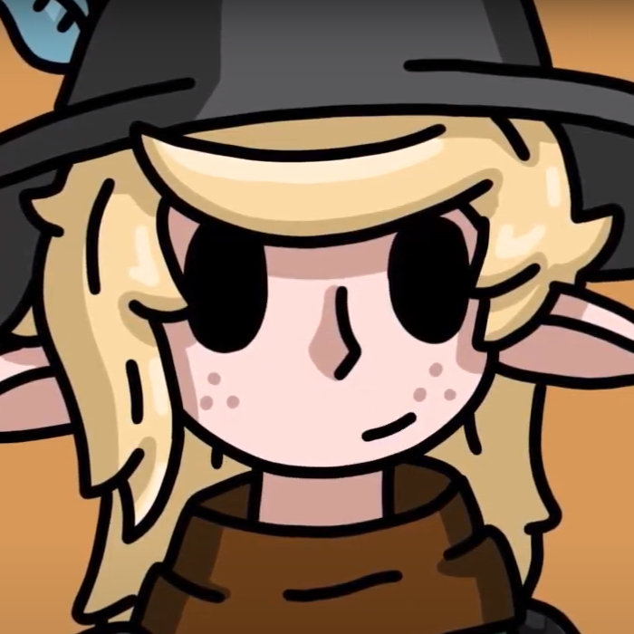
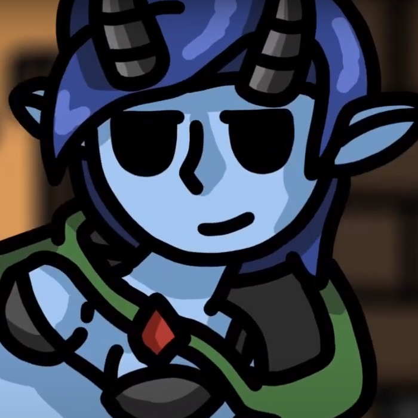
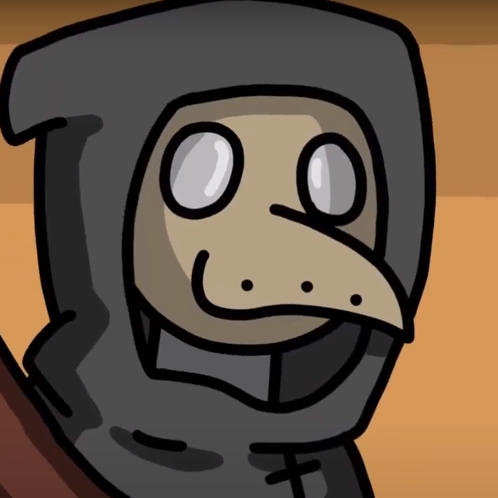
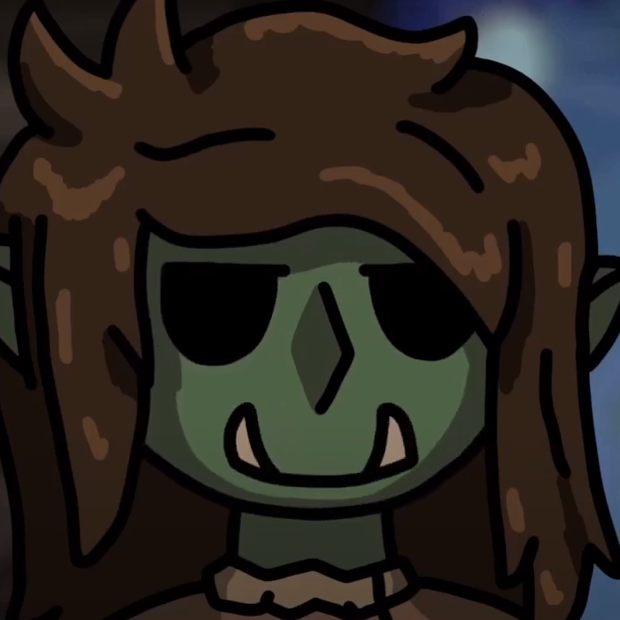

Veyico is a young elf with anger issues. She comes from a family of criminals and wishes to break free of their reputation. She often is the one who pulls the party together, though she does not wish that were the case.
Baiyu is a cruel tiefling who enjoys being malicious to everyone around her. She has a strong rivalry with Veyico, who often cleans up after her mistakes.
Vetro is a mysterious character who is always seen in his signature outfit, which covers him from head to toe. Although he seems frightening, he can be quite humorous at times.
Yazgash is an orc who is new to a lot of the world around her. She joined the party in Episode 2 and has a lot to learn. Things often go over her head, as she does not understand the figurative meanings others may say around her.
